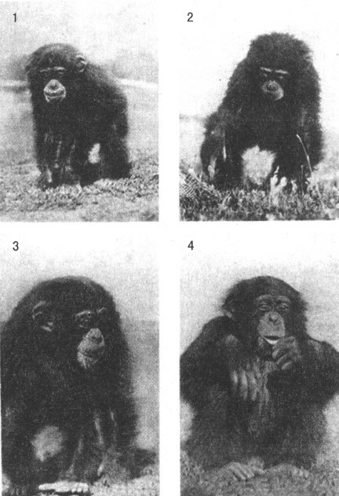

第10章
人类的特殊表情——憎恨和愤怒
·Hatred and Anger·
这里所考察到的单侧犬齿露出的表情，不论它是在游戏性质的冷笑时候出现的，或者是在凶恶的咆哮时候出现的，总是人类方面所显现出来的有趣的表情之一。它显示出人类起源于动物，因为无论哪一个人，甚至在和敌人做拼死的格斗而在地面上滚翻的时候，如果尝试要去咬敌人，那么就会把犬齿使用得比其他牙齿有更多的次数。

黑猩猩的各种表情：恐惧或兴奋，其毛发都会竖起来。
憎恨——大怒和它对身体组织的影响——露出牙齿——精神病患者的大怒——愤怒和愤慨——各种不同的人种表达这些情绪的情形——冷笑和挑战——面部一侧的上犬齿的露出
如果我们已经受到一个人的某种故意的伤害，或者预料会受到他的这类伤害，或者如果他对我们采取任何一种侵犯行为，那么我们就会讨厌他；而讨厌容易进展成为憎恨。这些感情如果被平和地感受到，那么也并不明显地被身体或者面部的任何动作所表示出来，大概只不过被某种举动上的庄重或者被几分恶劣情绪所表示出来。可是，只有少数人能够长期去回想到一个可恨的人，而毫不感觉到和表明出愤慨或者大怒的表征来。不过，如果侵犯我们的人是毫无意义的，那么我们只是对他抱着鄙视或者轻蔑。相反地，如果他是具有无限权力的，那么憎恨就会转变成为恐怖；例如，奴隶在想到残酷的主人时候，或者未开化的人在想到嗜血的凶神时候，就会发生恐怖。 (1) 我们的大多数情绪和它们的表达有很密切的联系；因此，如果身体保持被动的状态，那么这些情绪就很难存在下去；表情的性质主要是依靠那些在特定的精神状态下惯常进行的动作的性质来决定的。例如，一个人可以知道，自己的生命处在极度危险的境地，并且可以强烈希望摆脱这种危险，同时说不定会高喊起来，也像路易十六（Louis XVI）在受到一群凶暴的人包围时候高喊“难道我害怕吗？请来按我的脉搏吧”。同样地，一个人可以强烈憎恨另一个人，但是在他的身体组织还没有受到影响以前，我们还不能够说他已经大怒发作了。
大怒——在前面第三章里，在讨论到兴奋的感觉中枢对于身体的直接影响和习惯性联合动作的影响的互相配合的时候，已经有机会讲述到这种情绪。大怒以最多种多样的方式表达出来。这时候心脏和血液循环时常受到影响；面部发红，或者变成紫色，前额和头颈上的静脉扩大。曾经有人观察到，在南美洲的赤铜色的印第安人大怒的时候，他们的皮肤发红； (2) 据说，甚至在黑人身上的旧伤所遗留下来的白色斑痕上面，也可以看到这种现象。 (3) 猿类也由于激怒而面部变红。在我的一个婴孩生下未满4个月的时候，我多次观察到，他在将要发生激怒的最初表征，就是血液向他的光秃的头皮里奔流。另一方面，强烈的大怒有时反而会破坏心脏的活动，因此使面部变成苍白色或者铁青色； (4) 有不少患有心脏病的人就在这种强烈的情绪影响下突然死亡。
在大怒时候，呼吸也同样受到影响；胸部挺起，而扩大的鼻孔则发生颤动。 (5) 滕尼孙（Tennyson）写道：“愤怒时急剧呼吸，使她的优美的鼻孔胀大起来。”因此，我们可以听到关于这方面的一些英语说法，例如：breathing out vengeance［用报仇来吐气］和fuming with anger［愤怒得气死］。 (6)
兴奋的脑子把力量传送给肌肉，同时又把能量传送给意志。身体通常保持竖直位置，准备紧急行动，但是有时也朝着侵犯的人向前弯曲，而四肢的肌肉则多少变得刚硬。嘴通常紧紧闭住，表明出坚强的决心，牙齿咬紧，或者互相磨动。通常可以看到举起手臂和握紧拳头这些好像要打击侵犯者的姿态。很少有人在发生强烈的激情并且叫侵犯者走开的时候，能够阻止自己去采取那些好像要想猛烈地打击或者推开对方的动作。实际上，这种要打击对方的欲望，时常变得很难忍耐的强烈，以至于会去打击无生命的物体，或者把它们砸碎在地上；可是，这些姿态时常会变成完全没有目的的或者疯狂的。幼年的小孩在发生狂怒的时候，就仰天或者伏地打滚，发出尖叫，乱踢地面，把身边的一切东西乱抓乱咬。我听到斯各特先生说，印度小孩也是这样的；我自己也曾经看到，幼年的类人猿也做出这些动作来。
可是，大怒时常对肌肉系统起有完全不同的影响，因为极度愤怒的结果往往就成为颤抖。同时，麻痹的双唇就拒绝听从意志的支配，“因此声音就胶住在喉咙里”； (7) 或者声音变成高大、尖锐或者杂乱不清。如果讲话讲得太多和太快，那么嘴里就喷出白沫来。有时头发直竖起来；可是，我打算把这个问题归入到后面我讲到大怒和恐怖的混合情绪方面的另一章里去再谈。在多数情形里，前额上出现很显著的皱纹，因为这种现象是由于发生任何一种不愉快的或者困难的事情的感觉而连同精神的集中一起产生出来的。可是，有时眉毛并不太收缩和低垂，却仍旧是平直的，而同时闪闪发光的双眼则大张开来。双眼时常是明亮的，或者也像荷马所描写的说法，可以像是熊熊发光的火堆。 (8) 有时双眼充满血液，而且据说，会从眼窝里向外突出；这显然无疑是头部过度充血的结果，并且可以从静脉扩大的现象来得到证明。根据格拉希奥莱所说， (9) 在大怒时候，瞳孔时常收缩；我还听到克拉伊顿·勃郎博士所说，患脑膜炎的人在乱说谵语的时候就发生这种情形；可是，虹彩在各种不同的情绪影响之下的变化情形，是一个非常模糊不清的问题。
莎士比亚曾经把大怒的主要特征总括如下：
在和平的时候，一个人显得多么的安分，
具有最适当的沉静和谦逊；
可是，当战争的呼号吹送到我们耳朵里来的时候，
马上就要扮起老虎般的动作来：
使肌肉变得刚强，使血液奔涌起来，
于是使双眼带有一种可怖的形相；
现在又再咬紧牙关，扩张鼻孔，
保持激烈的呼吸，而且像拉满的弓一样，
鼓足全部精力！最高贵的英国兵士，向前猛进。
——《亨利五世》，第3幕，第1场
在大怒的时候，双唇有时用一种特殊的方法向外突出；我以为，只有依据人类起源于某种类人猿形状的动物的说法，方才可以来说明这种动作的意义。不仅从欧洲人方面，而且也从澳大利亚人和印度人方面，都曾经观察到这种突出双唇的情形。可是，更加普遍的情形则是双唇后缩，因此磨动的或者咬紧的牙齿也就向外露出。凡是写过关于表情的著者，差不多已经都注意到这种情形。 (10) 这时候的外貌，好像是准备要抓住和撕裂敌人而露出牙齿来的样子，不过也可能没有采取这种行动的意图。但松·拉西先生曾经看到澳大利亚人在吵架时候显出这种露齿的表情来；盖卡也从南非洲的卡弗尔人那里看到这种表情。 (11) 狄更斯（Dickens）在讲到一个刚才被抓住、而且被暴怒的群众包围着的凶恶的杀人犯时候，描写道： (12) “这些人一个个接连地从后面向前跳出，露齿恨骂，好像野兽一样来对付他。”每个曾经多次照看过幼年的小孩的人，一定都看到他们在发生激情的时候多么自然地去咬人的情形。大概他们的这种动作也像幼年的鳄一样，是属于本能的；幼年的鳄在从卵中一孵出来的时候，就已经会伸出自己的小颚去咬东西。
露齿的表情有时好像和双唇突出同时发生。有一个精密的观察者说道，他曾经在东方各民族当中多次看到最强烈的憎恨表现（这种憎恨很难和一种多少被抑制的大怒区分开来），而且有一次也看到一个年纪较大的英国妇女有这种表现。在所有这些情形里，都有“露齿，但是面部没有怒色；双唇伸长，两颊下垂，双眼半闭，但是前额却仍旧十分平静”。 (13)
如果注意到人们在交战时候很难使牙齿互咬，那么大怒发作时候把双唇后缩和牙齿露出这种好像要去咬侵犯者的样子，就显得很引人注意，因此我就去向克拉伊顿·勃郎博士请教说，这种习惯究竟在那些不能控制自己的激情的精神病患者当中，是不是普遍的。他告诉我说，他已经多次在精神病患者和白痴方面观察到这种习惯，并且提供给我下面的一些说明。
他在收到我的询问信以前不久，亲眼看到一个患精神病的妇女具有不能控制的愤怒发作和毫无意义的嫉妒。起初，她大骂丈夫；在大骂的时候，她的嘴里出现白沫。此后，她紧闭双唇，走到贴近丈夫的身边，并且作出恶意的皱眉来。接着，她把双唇向后牵伸，特别是把上唇的两端强烈后伸；同时还准备把丈夫痛打一下。第二个例子则是关于一个老年的兵士方面的。在医生要求这个兵士服从精神病院的规则时候，他就表示不满，结果发生狂怒。他通常开头就质问勃郎博士道，“为什么你用这样的方法来对待我，却不感到羞惭”。此后，他就大骂和诅咒，不断走来走去，把双臂乱挥，并且威胁任何在他近旁的人。最后，当他的愤怒达到顶点的时候，他就采取特殊的侧行动作。冲向勃郎博士，挥舞着紧握的拳头，并且作着要消灭对方的威吓。于是可以看到，他的上唇，特别是嘴角，向上升起，因此显露出大犬齿来。他从全部咬紧的牙齿里发出咝咝的咒骂声来，因此他的全部表情显出极其凶恶的样子。也可以把相似的叙述应用到另外一个人身上去，不过有几点是例外，就是这个人通常嘴里出现白沫，并且吐口水，用奇怪的迅速方法跳舞和左右跳跃，同时用尖锐的假声来叫骂。
勃郎博士还告诉我关于一个癫痫性白痴的情形。这个白痴不能独立行动，整天玩弄着几件玩具作为娱乐；可是，他的脾气阴郁，容易兴奋而狂怒起来。如果任何人触碰到他的玩具，那么他就把自己的头部从惯常的下垂位置慢慢向上抬起，用双眼紧紧盯住侵犯者，同时作着缓慢而且愤怒的皱脸。如果这种打扰的事情连续发生几次，那么他就把自己的厚唇向后牵伸，显露出一列向前突出的可怕牙齿来（他的大犬齿特别显著），此后他用自己的张开的手向侵犯的人作迅速而凶猛的抓握。据勃郎博士所说，如果考虑到他平常的行动缓慢，因此在受到任何一种声音的吸引时候，要耗费15分钟才能够把自己的头部从一侧转动到另一侧去，那么现在这种抓握的速度就显得是惊人的了。在用这种方法把他激怒以后，如果把一块手帕、一本书或者其他东西放到他的手里去，那么他就会把这件东西放进嘴里去，咬嚼它。尼古尔（Nicol）先生也替我记述了两个关于精神病患者的情形；这些精神病患者在大怒发作的时候也把双唇向后退缩。
毛兹莱博士在详细讲述了白痴方面的各种各样奇怪的动物般的特性以后，就提出问题来说，这些特性难道不是由于原始本能的重现而产生的；它们也就是“一种从遥远的过去时代传来的微弱的回声，它证明了人类已经差不多和这个时代脱离了亲缘关系”。他又补充说，每个人的脑子在本身的发育过程里，要通过那些和比较低等的脊椎动物的脑子发育情形一样的阶段；因为白痴的脑子处在被抑制的状态里，所以我们可以假定说，它“将表现出自己的最原始的机能，而没有表现出任何高级的机能来”。毛兹莱博士认为，也可以把这个同样的见解推广应用到几种精神病患者的退化状态的脑子方面去，并且提出问题道，否则，从什么地方会发生出“有些精神病患者所表现出来的怒恨的咆哮、破坏的本能、下流的语言、野性的叫号、讨厌的习性来呢？如果不承认人类具有兽性，那么为什么一个人在丧失理智以后，也会变得像有些人所干出的行动那样具有野兽般的特性呢？” (14) 看上去，也必须用肯定的语气来回答这个问题才好。
愤怒、愤慨——这两种精神状态和大怒只是具有程度上的差异，而在外表特征上并没有显著的差别。在适度的愤怒时候，心脏的活动略微加强，脸色显得红润，而双眼变得明亮。同时，呼吸也略微加速；又因为一切为这种机能服务的肌肉进行联合动作，所以鼻孔两翼略微被提升起来。而可以自由吸进空气；这就是愤慨的最显著的外表特征。这时候嘴通常紧闭，而且在额上差不多时常有皱眉。愤慨的人并不采取极度大怒时候的狂暴姿态，而是无意识地突然采取一种准备要进攻或者打击敌方的姿态，大概他要用挑战方式来对敌方作从头到脚的打量。他使自己的头部竖直，胸部显著地扩大，并且使双腿坚强地挺立在地面上。他把双臂保持在各种不同的位置上，弯曲起一肘或者双肘，或者使双臂都刚硬地下垂在身体两侧。欧洲人在愤慨时候通常都握紧拳头。 (15) 在照相图版VI里，图1和图2就很清楚地表明出那些发生愤慨的人的姿态。任何一个人都可以从镜子里看到，如果他鲜明地想象到自己已经受到侮辱，或者用愤怒的声调要求对方说明侮辱原因，那么他就会突然无意义地采取这种握拳的姿态。大怒，愤怒和愤慨，在全世界各地差不多以同样的方式表明出来。下面的叙述具有相当大的价值，可以作为这方面的证据，并且去说明几个以前所提出的意见。可是，在握拳方面却有一个例外；大概这种例外主要是只限于那些握拳相斗的人方面。在我的通信者当中只有一个人看到澳大利亚土人握紧拳头。所有的通信者都一致说，在这种情绪下，身体总是保持直立位置；而且除了两个通信者以外，大家都说，当时双眉皱缩得很厉害。有几个人提到，嘴紧紧闭住，鼻孔扩大，双眼闪闪发光。根据塔普林牧师的叙述，澳大利亚土人的大怒，是用双唇突出和双眼大张的形态来表示；而当地妇女的大怒则用环绕跳舞和向空中撒布灰尘的动作来表示。还有一个观察者讲到，土人在大怒时候，把双臂乱挥。
至于马来半岛的马来人、埃塞俄比亚人和南非洲的土人方面，我也获得了关于他们在大怒时候的情形的叙述，除了握拳一点以外，其余动作都相似。北美洲的达可塔族印第安人（Dakota indians）在大怒时候也有同样的动作；而且根据马太先生所说，他们当时挺直头部，皱眉，并且时常跨着大步走离开来。勃烈奇斯先生肯定说，火地岛土人在发怒的时候，时常用脚重踏地面，狂乱地走来走去，有时哭喊和面色变得苍白。斯塔克牧师曾经观察一对新西兰男人和女人吵嘴的情形，并且在自己的笔记本上写了下面一段记事：“两眼扩大，身体激烈地前后摇动，头部向前倾斜，紧握双拳，有时把身体突然后仰，有时两人的面孔直接相对。”斯文和先生说道，我（本书著者）的叙述是和他从中国人方面看到的情形一致的，只不过发怒的中国人一般把身体向对方倾侧，并且用手指着对方的时候，发出一阵大骂来。
最后，至于说到印度的土人，那么斯各特先生已经寄给我一篇关于他们在大怒时候的姿态和表情的叙述。有两个属于下等阶层的孟加拉省土人（Bengalees），因为借钱事情而争吵起来。起初他们的态度还平静，但是很快变得疯狂起来，发出了一大阵最难听的对于双方亲属和过去很多代祖宗方面的恶骂来。这时候他们的姿态和欧洲人的姿态很不相同，因为虽然他们的胸部扩大和双肩耸起，但是双臂仍旧刚强地下垂，双肘向内弯曲，而双手则轮流握拳和张开。他们的双肩时常耸起得很高，接着又再下降。他们的双眼彼此在自己的低垂而强烈皱紧的眉毛下面恶狠地怒视着，而突出的双唇则紧紧地闭住。他们彼此相对走近，把头部和颈部向前伸出，于是互相推撞，乱抓和捕捉。头部和身体向前伸出的姿态，大概是大怒时候的普遍现象；我曾经观察到，有一个下流的英国妇女在街道上和人激烈争吵的时候，就采取这种姿态。在这类情形里，可以推想到，争吵的任何一方面都不能预料到是否会遭到对方的突然一击。 (16)
有一个被雇用在植物园里的孟加拉人，因为偷窃了一株贵重的植物，而在斯各特先生面前受到土人监督的叱责。他静默地和轻侮地倾听着叱责；他的身体采取直立姿态，胸部扩大，嘴闭紧，双唇突出，两眼向前直视不动，眼光炯炯逼人。此后，他举起一双握拳的手，又把头部向前突出，双眼大张，眉毛上扬，用挑战的方式来表示自己没有犯罪。斯各特先生还观察到锡金（Sikhim）境内的两个美奇斯人（Mechis）为了分工钱而争吵起来的情形。当时他们忽然发生狂暴的激怒，于是双方的身体略微屈曲，头部向前突出；他们彼此扮起怪脸来；双肩向上耸起；两臂在肘部处刚硬地向内弯曲，而双手的五指则痉挛地屈曲，但是没有真正紧握成拳头。他们继续不断地互相走近，接着又互相退走；虽然时常举起手臂，好像要想打击对方似的，但是他们的手是张开的，所以并没有打过一拳。斯各特先生也观察到列普查人（Lepchas）有同样的动作；他时常看到这些人自相争吵；他注意到，他们在争吵时候保持双臂刚硬，而且几乎和身体平行；双手略微向后突出，有一部分屈曲，但也没有握成拳头。
冷笑、挑战：露出一侧的犬齿——在这里，我想要考察的表情，虽然和上面所讲到的那种双唇后缩和牙齿露出的表情不同，但是相差很小。现在这种表情的不同地方，就在于单单上唇后缩，而且只是后缩到露出面部一侧的犬齿显露出来的状态；面部本身一般略微向上仰起，而且从触犯他的人方面一半反转过来。大怒的其他表征未必时常显现出来。可以偶然观察到，当一个人虽然没有真正发起怒来，而对另一个人作了冷笑或者挑战的时候，就有这种表情出现；例如，如果任何一个人受到别人开玩笑的叱责，说他犯有某种罪行，那么他在回答说“我真瞧不起这种乱加罪名的行为”的时候，就会显露出这种表情来。这种表情并不是常见的；可是，我曾经看到，有一位太太因为受到另一个人嘲弄，就十分明显地表现出这种表情来。早在1746年，帕尔生斯（Parsons）已经描写了这种表情，他在一幅木刻画上表明出面部一侧露出犬齿的情形。 (17) 烈治朗德尔先生在我还没有对这个问题提出任何暗示以前，就询问我道，我以前究竟有没有注意到这种表情，因为这种表情曾经使他十分吃惊。他曾经替我拍了一张贵妇人的照片（照相图版IV，图1）；这位贵妇人有时无意地露出一侧的犬齿来，并且也能够有意地做出这种非常明显的表情来。
这种半开玩笑的冷笑的表情，如果犬齿露出而同时双眉紧锁和眼睛发出凶光来，那么就会转变成为极其凶恶的表情。曾经有一个孟加拉省的小孩，在斯各特先生面前因为犯了某种过失受到叱责。这个有过失的小孩不敢用话来发泄自己的怒气，但是在他的面部上，明显地表现出这一点来，因为有时作着挑战式的皱眉，有时“作着完全像狗一样的咆哮”。当他作这种表情的时候，“他的靠近叱责者一侧的上唇角向上掀起，显露出巨大的突出的上犬齿来，同时在额上仍旧现出极显著的皱眉”。贝尔爵士肯定说，演员库克（Cooke）能够表演出最明确的憎恨的表情来，就是：“他用双眼斜视，把上唇的外侧部分向上提升，并且使一只锐角形的牙齿显露出来。” (18)
犬齿露出是双重动作的结果。这时候，嘴的一角或者一端略微向后牵伸，同时一条平行而且靠近鼻子的肌肉把上唇的外侧部提起，于是面部这一侧的犬齿就显露出来。这条肌肉的收缩，使同侧的面颊上出现一条明显的沟纹，而且在同侧的眼睛下面产生显著的皱纹，尤其在这只眼睛的内角处有最显著的皱纹。这种动作正好像是一只正在咆哮的狗的动作；一只狗在假装要相斗的时候，就把单侧的上唇，就是把朝对它的敌手方面的上唇，向上提起。我们的英文字sneer（冷笑）实际上是和snarl（咆哮）相同的；snarl这个字起初就是snar，而末尾的字母l“单单是一个表明动作继续下去的语气词”。 (19)
我以为，在所谓嘲笑或者讥笑的表情里，恐怕也含有同样的表情的痕迹，而可以被我们看出来。这时候，双唇保持相合在一起，或者近于相合，但是嘴的朝对着被嘲笑的人的一角向后退缩；这种嘴角向后牵伸的动作也就是真正的冷笑的一部分。虽然有些人在微笑时候的面部两侧表情也彼此有差异，但是仍旧很难使人理解，为什么在嘲笑的情形里，微笑即使是真实的，也是通常只限于面部的一侧。在这些情况里，我还注意到那条把上唇的外侧部分向上提起的肌肉发生轻微痉挛；如果这种动作充分进行下去，那么它就会使犬齿显露出来，而且发生真正的冷笑。
居住在吉普兰的边远地区的澳大利亚传教士巴尔满先生，在回答我所提出的关于面部一侧的犬齿露出情形的问题时候说道：“我看出，当地土人在彼此互相咆哮的时候，就磨动闭紧的牙齿，把上唇牵引向一侧，面部显出通常的愤怒表情来；可是，他们却朝着对方正面直视。”还有三位在澳大利亚的观察者、一位在埃塞俄比亚的观察者和一位在中国的观察者，也用肯定的说法来回答了我对这个问题的询问；可是，因为这种表情是稀见的，又因为这些观察者没有作详细的叙述，所以我就不敢绝对相信他们的回答。可是，也绝不可以说，这种动物般的表情在未开化的人方面不可能比在文明的种族方面更加普遍。吉契先生是一位可以使人完全相信的观察者；他有一次曾经在马来半岛的马来人方面观察到这种表情。格列尼牧师回答我的询问道：“我们已经在锡兰的土人方面观察到这种表情，但是并不时常出现。”最后，在北美洲，罗特罗克博士在有些未开化的印第安人方面也观察到这种表情，并且时常在一个邻近阿特那族（atnahs）的部落里看到这种表情。
虽然在对任何一个人冷笑或者挑战的时候，确实有时单单把上唇的一侧向上提起，但是我不知道是不是这种情形常常这样，因为通常面部有一半转了过去，而且这种表情时常是很快就消失的。这种限于一个侧面的动作，可能不是表情的主要部分，而且也可能依靠于那些只会采取单侧动作的相应的肌肉而产生。我曾经要求4个人努力去有意识地做出这种动作来；当中有两个人只能够把左侧的犬齿露出来，一个人只能够把右侧的犬齿露出来，而最后一个人则无法把任何一侧的犬齿露出来。虽然这样，我们却不能就此断定说。这4个人即使真正要对任何一个人进行挑战，也不会无意识地露出那朝向侵犯者一侧（不管是左侧或者右侧）的犬齿来。原来，我们已经知道，有些人不能够有意地把自己的眉毛倾斜起来，但是如果他受到任何一种悲痛的真正的、即使是最微小的原因的影响，那么他马上就会采取这种把眉毛倾斜起来的动作。因此，这种有意要把面部一侧的犬齿露出来的能力时常会完全丧失的情形，正指明出：这种表情动作是被使用得很稀少的，而且差不多已经成为痕迹的动作了。人类竟会具有这种能力，或者会显露出这种动作的倾向来；这确实是一个使人惊奇的事实，因为塞登先生在人类的最近亲缘动物方面，就是在动物园里的猿类方面，从来没有观察到它们有这种露出犬齿来咆哮的动作；他肯定说，狒狒虽然生有犬齿，但是从来没有做出这种动作，只会在感到怒恨或者准备进攻的时候，把全部牙齿一起显露出来。在成年的类人猿方面，雄性的犬齿要比雌性的犬齿大得多；究竟它们在准备交战的时候是不是会把犬齿露出，这还不知道。
这里所考察到的单侧犬齿露出的表情，不论它是在游戏性质的冷笑时候出现的，或者是在凶恶的咆哮时候出现的，总是人类方面所显现出来的有趣的表情之一。它显示出人类起源于动物，因为无论哪一个人，甚至在和敌人做拼死的格斗而在地面上滚翻的时候，如果尝试要去咬敌人，那么就会把犬齿使用得比其他牙齿有更多的次数。从人类对于类人猿的亲缘关系方面看来，我们就很容易推测说，我们人类的雄性的半人半兽的祖先具有大犬齿；甚至现在也有时会出生一些有特别大的犬齿的人，而且在这些犬齿的相对的颚上出现那些容纳它们的间隙。 (20) 其次，我们虽然还没有获得类推方面的支持，但是也可以猜测说，我们的半人半兽的祖先在准备要进行斗争的时候，就会露出犬齿来，正好像我们在发生狂怒的时候所做出的动作一样，或者是在单单向人作冷笑或者挑战而并没有任何一种真正要用自己的牙齿去进攻的意图时候所做出的动作一样。
————————————————————
(1) 参看培恩先生对这方面所提出的一些意见；培恩：《情绪和意志》（The Emotions and the Will ），第二版，1865年，第127页。
(2) 伦奇尔：《巴拉圭的哺乳动物的自然史》，1830年，第3页。
［新几内亚（New Guinea）的咖啡色皮肤的帕布安人（papuans ）是这样；参看米克鲁霍-马克莱（Miklucho-Maclay）的文章，载在Naturnrkundig Tijdschrift voor Nederlandsch Indie ，第33卷，1873年。］
(3) 贝尔爵士：《表情的解剖学》，第96页。另一方面，白尔格斯博士（《脸红的生理学》，1839年，第31页）讲到黑人妇女的伤疤发红也具有脸红的性质。
(4) 莫罗和格拉希奥莱曾经讨论到面部在强烈的激情影响下的颜色变化；参看拉伐脱尔所编的《人相学文集》，1820年的版本，第4卷，第282页和第300页；又参看格拉希奥莱：《人相学》，第345页。
(5) 贝尔爵士（《表情的解剖学》，第91页，第107页）曾经充分讨论到这个问题。莫罗指出（参看拉伐脱尔所编的《人相学文集》，第1820年的版本，第4卷，第237页）并且用坡尔塔尔（Portal）的叙述来作证明说，气喘病的患者由于鼻翼提肌的习惯性收缩，而获得永久性扩大的鼻孔。皮德利特博士所作的关于鼻孔扩大的说明（《表情和人相学》，第82页），就是为了要在把嘴闭住和咬紧牙齿的时候容许自由呼吸；这个说法显然不及贝尔爵士的说法正确；贝尔爵士把鼻孔扩大的原因看做是呼吸方面的一切肌肉的交感作用（就是习惯性的合作）。可以看到，发怒的人的鼻孔扩大起来，不过他的嘴是张开来的。［根据杰克逊先生所说，荷马曾经注意到大怒对于鼻孔的影响情形。］
(6) 魏之武先生：《语言的起源》，1866年，第76页。他还观察到激烈呼吸的声音，“是用拼音字puff，huff，whiff（普夫、赫夫、惠夫）来代表；因此huff就表示恶劣情绪的发作”。
(7) 贝尔爵士（《表情的解剖学》，第95页）曾经对大怒的表情提出一些卓越的意见。［关于大怒时候发生的一种暂时失语症的有趣情形，可以参看秋克的著作：《精神对于身体的影响》（Influence of the Mind on the Body ），1872年，第223页。］
(8) 荷马：《伊里亚特》（Iliad ），第1章，第104行。
(9) 格拉希奥莱：《人相学》，1865年，第346页。
(10) 贝尔爵士：《表情的解剖学》，1865年，第177页。格拉希奥莱说道（《人相学》，第369页）：“les dents se découvrent，et imitent symboliquement l'action de déchirer et de mordre。”［牙齿显露出来，并且象征地表明出咬啮和撕裂的行动来。］如果格拉希奥莱不采用“象征的”这个模糊不明的形容词，而这样说道，这种动作是我们的半人半兽的祖先像现在的大猩猩和猩猩那样在用牙齿互咬相斗的原始时代里所获得的一种习性的痕迹，那么他的叙述就会更加容易使人明白了。皮德利特博士（《表情和人相学》，第82页）也讲到上唇在大怒时候后缩的情形。在霍加尔特（Hogarth）的惊人的图画之一的版画上，就用张大的闪闪发光的眼睛、皱缩的前额和露出的咬紧的牙齿，来表明出激情。
(11) ［孔利（Comrie）博士在自己的文章里（《人类学研究所报告》，Journal of Anthropologcal Institude ，第4卷，第108页）在讲到新几内亚的土人时候写道，他们在发怒时候露出犬齿，并且吐口水。］
(12) 狄更斯：《奥列佛·特惠斯特》（Oliver Twist ），第3卷，第245页。
(13) 《观察家杂志》（The Spectator ），1868年7月11日，第819页。
(14) 毛兹莱的文章，载在《水和土地杂志》，1870年，第51-53页。
(15) 勒布朗在他的著名的著作《关于表情的讲义》（Conférence sur l'Expression ，收编在拉伐脱尔所编的《人相学文集》，1820年的版本，第9卷，第268页）里指出说，愤怒用紧握双拳来表示。参看赫希克（Husheke）所作的同样的说法：《表情和人相学、生理学资料片断》（Mimices et Physiognomices，Fragmentum Physiologicum ），1824年，第20页。还可以参看贝尔爵士所著的《表情的解剖学》，第219页。
(16) ［“激怒的人用头部和身体朝对着侵犯者突出的姿态，难道不是过去用牙齿进攻对方的痕迹吗？”——达尔文所作的附注。
莫斯里（H. N. Moseley，《人类学研究所报告》，第6卷，1876—1877年）提供了一个关于海军部岛土人（Admiralty Islander）在“狂怒”时候的情形的报告；他描写当时这个土人的头部“向下降低，朝对着自己的愤怒的对象猛冲，好像要用牙齿去进攻对方似的”。］
(17) 帕尔生斯：《哲学学会学报》（Transact. Philosoph. Soc. ），附录，1746年，第65页。
(18) 贝尔：《表情的解剖学》，第136页。贝尔爵士（在第131页上）把这些使犬齿显露出来的肌肉叫做咆哮肌（Snarling muscles）。
(19) 亨士莱·魏之武：《英语语源学字典》，1865年，第3卷，第240页，第243页。
(20) 参看《人类起源》，第二版，第1卷，第60页。［就是这本书的第2章里的原注号43和44的一段。——译者注］